Katsuura, Chiba: things to do, food and stays
Katsuura · Chiba
Katsuura
Highlighted on the Chiba map.

Stay
南房総 勝浦 翠海
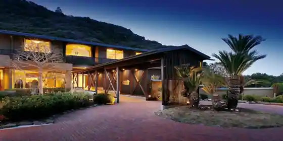
Minamiboso Katsura Sui Umi
Inn at Bishokutobihadano Onsen in Okitsukuboyamadai, Katsuura.
磯香の湯宿 鵜原館
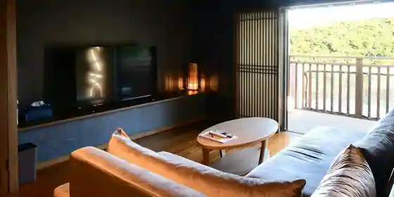
Iso Kaori No Yuyado Uhara Kan
ホテルハーヴェスト勝浦
Hotel Havesuto Katsura
ホテルブルーベリーヒル勝浦
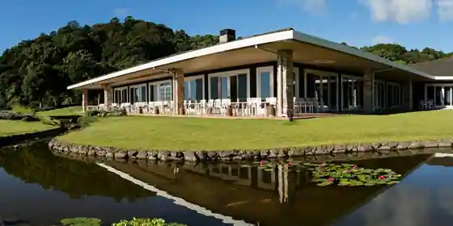
Hotel Buruberihiru Katsura
and FOREST勝浦 竹の離れ
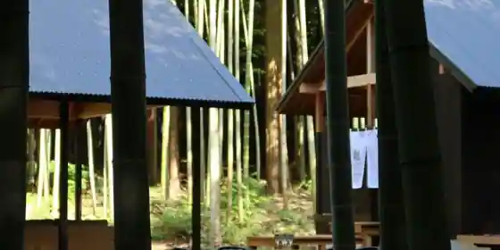
and FOREST Katsura Take No Hanare
Inn in Sano, Katsuura with scenic views.
RICKA KATSUURA
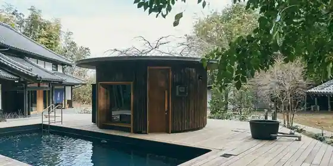
RICKA KATSUURA
Inn in Ogusu, Katsuura with a retreat concept.
Under the Sea UBARA
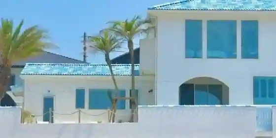
Under the Sea UBARA
THE BLUE HOUSE
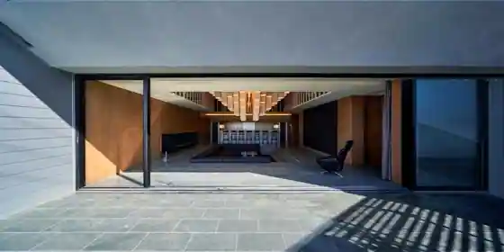
THE BLUE HOUSE
里の箱庭 Lodge365
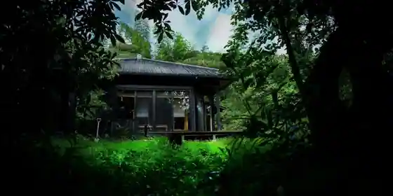
Sato No Hakoniwa Lodge365
Inn in Shiraikubo, Katsuura with a quiet countryside setting.
Secret Break Hebara
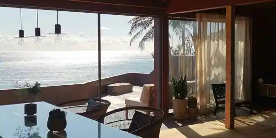
Secret Break Hebara
THE VIBES VILLA
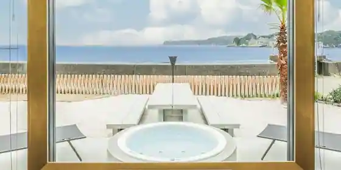
THE VIBES VILLA
Inn in Uhara, Katsuura with one group per day and a sauna.
and RIVER勝浦
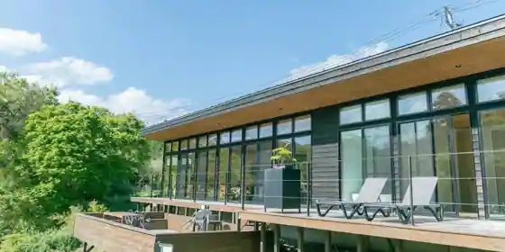
and RIVER Katsura
Inn in Sano, Katsuura with open-air baths and scenic views.
Dining
江ざわ
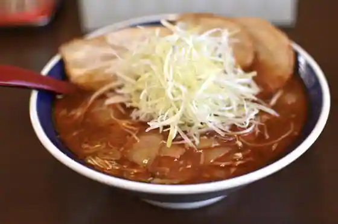
Ko Zawa
やまご食堂
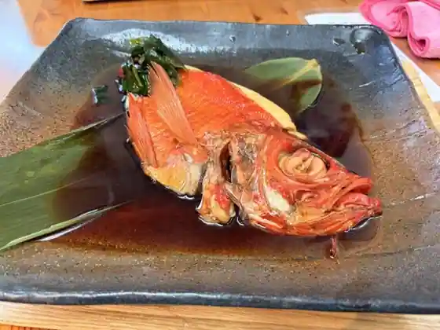
Yamago Shokudo
割烹 中むら
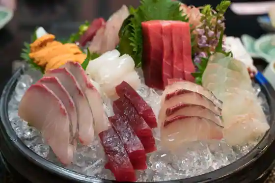
Kappo Naka Mura
勝浦すし食堂 のだちゃん
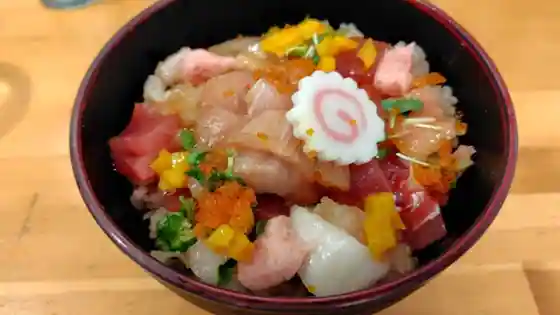
Katsura Sushi Shokudo Nodachan
旬彩厨房喰家
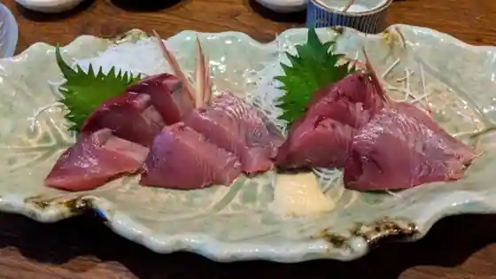
Jun Sai Chubo Shoku Ie
はらだ
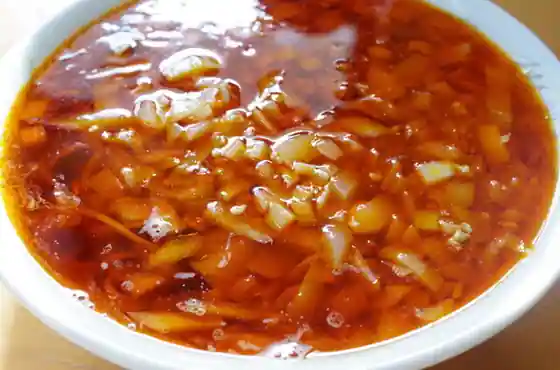
Harada
三河屋
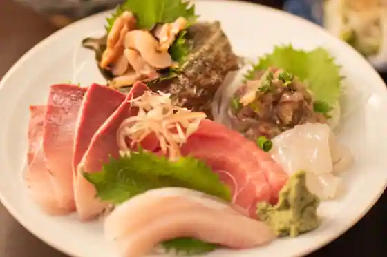
Mikawa Ya
こだま
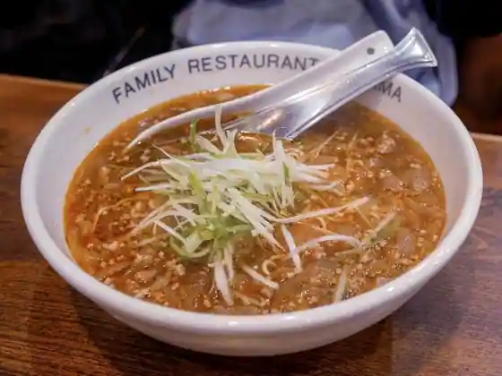
Kodama
ラーメン松野屋
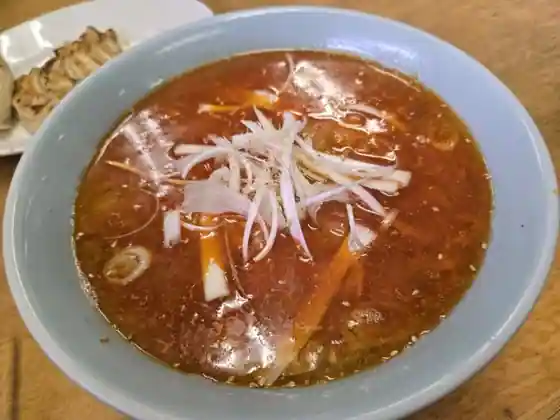
Ramen Matsuno Ya
eden
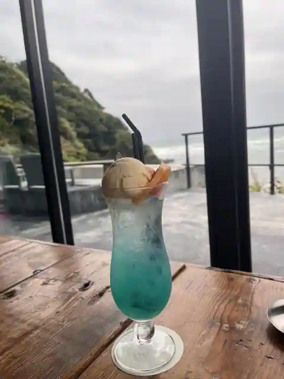
eden
てっぱつ屋
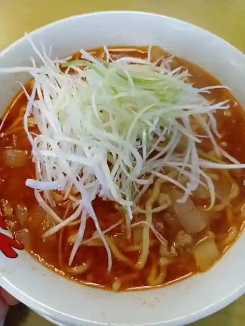
Teppatsu Ya
御食事処 いしい
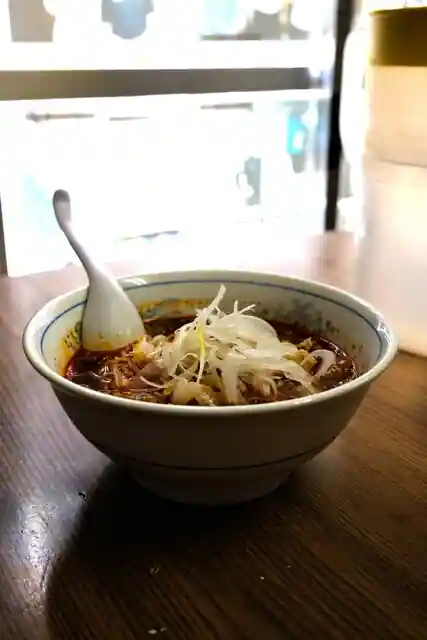
Mike Koto Tokoro Ishi
朝市新鮮広場うおすい
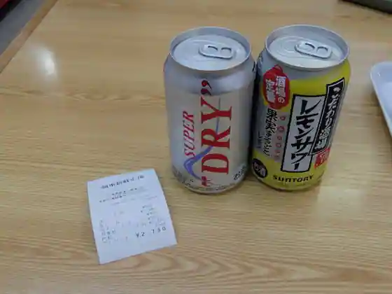
Asaichi Shinsen Hiroba Uosui
てっぱつ屋 佐野店
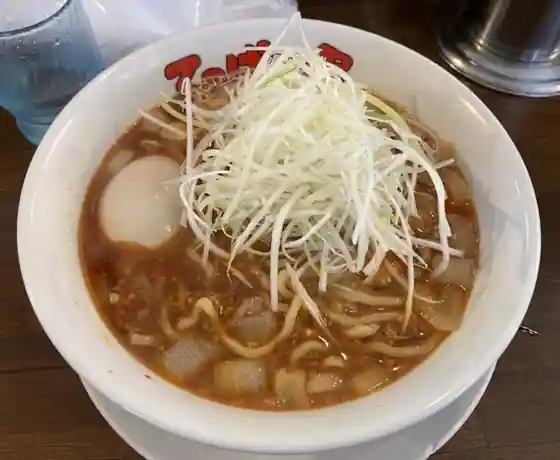
Teppatsu Ya Sano
勝浦港 市場食堂 勝喰
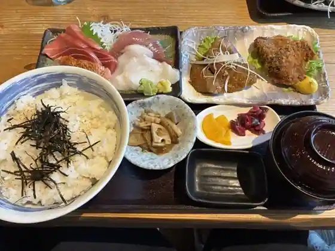
Katsura Minato Shijo Shokudo Kachi Shoku
ラグタイム
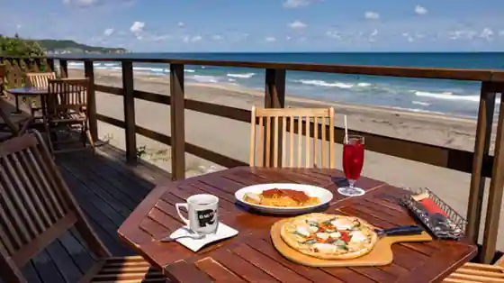
Ragutaimu
下町丸竹都寿司
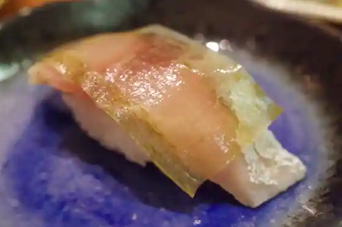
Shitamachi Marutake Miyako Sushi
とんかつ山本
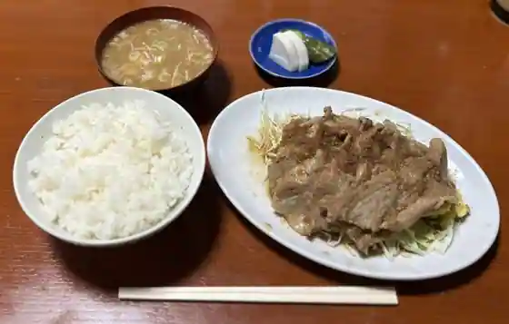
Tonkatsu Yamamoto
おさかな処 さわ
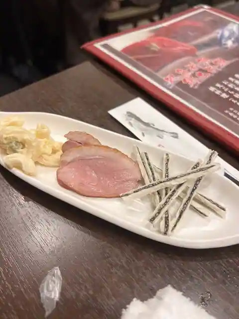
Osakana Tokoro Sawa
お食事処 しんでん
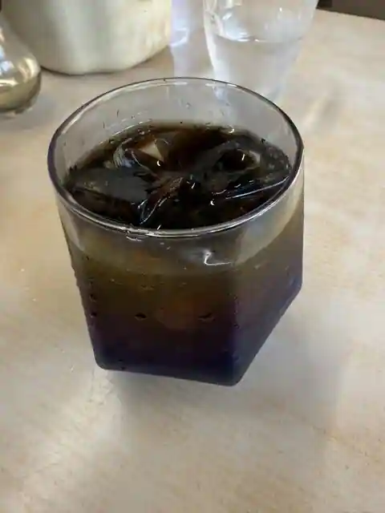
O Shokuji Tokoro Shinden
まるろ
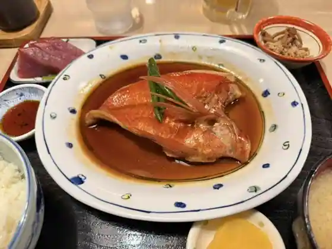
Maruro
かねまさ
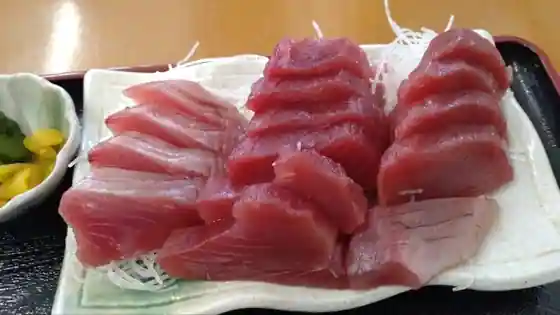
Kanemasa
お食事処 欅
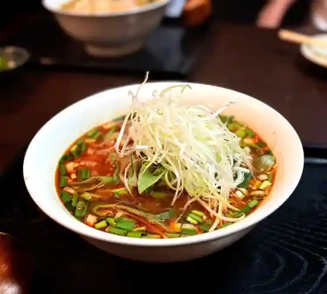
O Shokuji Tokoro Keyaki
SPAICE COFFEE HOUSE
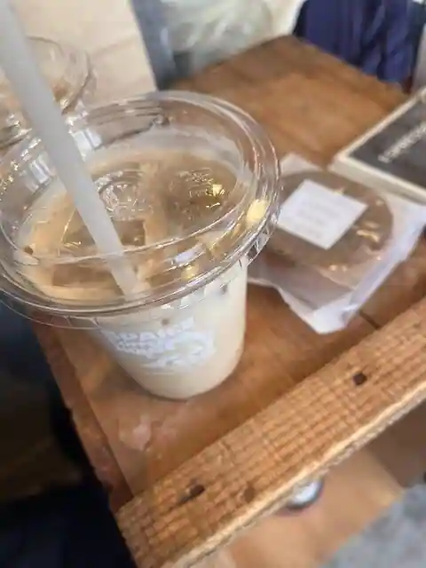
SPAICE COFFEE HOUSE
Sights
Moriya Coast (Watarishima)
Katsura Kaichu Park

Uhara Coast (Shiroi Torii)

Katsuura Asa City

Tomisaki Shrine

Chiba Prefectural Chuo Museum Bunkan Umi no Museum
Maribupointo (SUP Experience)
Katsuura Chuo Coast
KAPPY Bijita Center
NAGU KATSUURA
Shin Katsuura Gyokyo Katsuura Ekimae Chokubai Tokoro
SGT Art Museum
Aji Sai Kan
Kangun Tsuka
Shin Katsuura Gyokyo Katsuura Kaichukoen Chokubai Tokoro
Taka Sho Tera